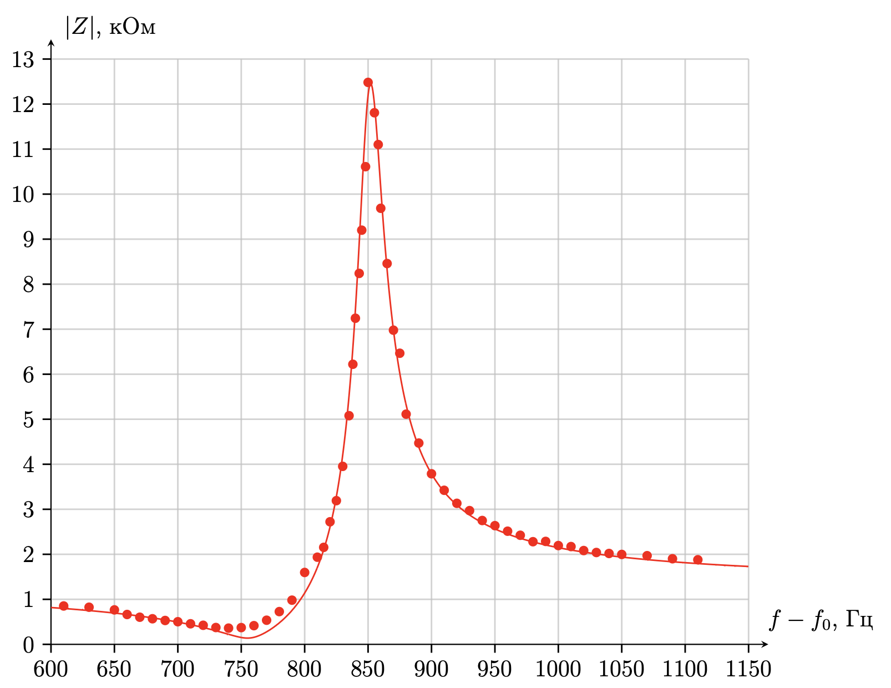
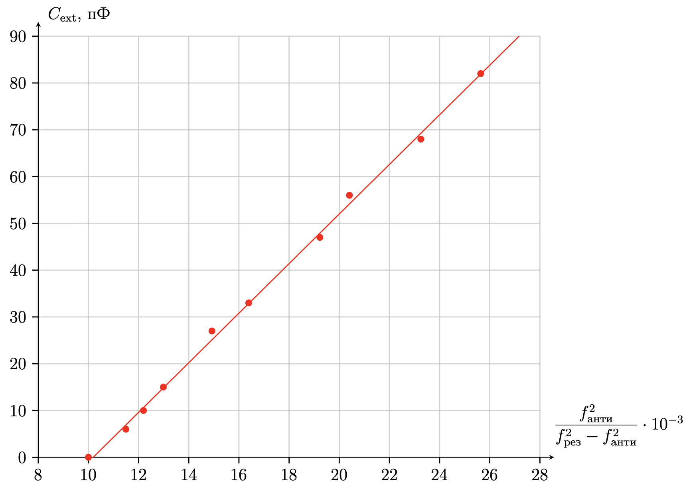

X26 (2026) — English translation
To complete this step, you need to carefully look around the entire workplace. If you look carefully enough, there is a high probability of finding a package with electronic components on the table, on which an individual code in the “$OOO~00~00$” format is applied. After discovering the package, we carefully rewrite the entire code using a pen into a specially designated place on the answer sheet (this place is easily identified by the inscription “A0” on the left). At this stage you need to be extremely focused, otherwise it may lead to mistakes. The most common mistakes are: rewriting only the last 4 characters (“$00~00$”); rewriting characters in the wrong order (“$00~00~OOO$”); errors in spelling of characters (“$OOO~oo~oo$”); adding extra characters (“$00~00~(OOO)$”); no code on the answer sheet. The next step in completing this item is to check the completeness of the package. The check procedure is as follows: Open the bag. Carefully pour out all the ingredients from the bag. Make sure the bag is really empty. Familiarize yourself with the list of equipment from the condition (if you are sufficiently insinuating when reading the condition of the problem, it can be found by the inscription Equipment). Check for the presence of a quartz resonator in the poured elements (looks like a gray box with legs). Read the table of capacitor markings presented after the photo of the equipment in the condition. Attention! It is required to compare in order the presence of capacitors in the table (see point 3) and on the table, poured out of the bag in point 1 (see point 1). If the mapping between the names in the table and the capacitors on the table is one-to-one, then you can proceed to the next step. Otherwise, you should contact the duty officer.
To complete this step, you need to carefully look around the entire workplace. If you look carefully enough, there is a high probability of finding a package with electronic components on the table, on which an individual code in the “$OOO~00~00$” format is applied.
After discovering the package, we carefully rewrite the entire code using a pen into a specially designated place on the answer sheet (this place is easily identified by the inscription “A0” on the left). At this stage you need to be extremely focused, otherwise it may lead to mistakes. The most common mistakes are:
The next step in completing this item is to check the completeness of the package. The verification procedure is as follows:
Let's introduce notations for the voltages that we measure on an oscilloscope: \[U_0 \equiv U_{\text{CH}1};\quad U_1\equiv U_{\text{CH}2}.\] Let's write the equations for amplitudes and phases for two channels of the oscilloscope: \[\tilde U_{\text{CH}1}= \tilde I(R_0 + Z);\] \[\tilde U_{\text{CH}2} = \tilde I Z.\] Divide the equations and get: \[\dfrac{U_{\text{CH}2}}{U_{\text{CH}1}} e^{i\varphi}= \dfrac{Z}{R_0+Z}.\] Now we can get an expression for the impedance of a quartz resonator: \[Z = U_{\text{CH}2}R_0\cdot\dfrac{e^{i\varphi}}{U_{\text{CH}1}-U_{\text{CH}2}e^{i\varphi}}\] This means that the impedance module can be recalculated using the following formula: \[|Z| = \dfrac{U_{\text{CH}2}R_0}{\sqrt{(U_{\text{CH}1}-U_{\text{CH}2}\cos\varphi)^2+(U_{\text{CH}2}\sin\varphi)^2}}\] Let's recalculate (see solution A3) and plot the dependence. \[f_0=1.999000~\mathrm{MHz}\]
\[\tilde U_{\text{CH}1}= \tilde I(R_0 + Z);\]
\[\tilde U_{\text{CH}2} = \tilde I Z.\] Let's divide the equations and get: \[\dfrac{U_{\text{CH}2}}{U_{\text{CH}1}} e^{i\varphi}= \dfrac{Z}{R_0+Z}.\] Now we can get an expression for the impedance of a quartz resonator: \[Z = U_{\text{CH}2}R_0\cdot\dfrac{e^{i\varphi}}{U_{\text{CH}1}-U_{\text{CH}2}e^{i\varphi}}\] This means that the impedance module can be recalculated using the following formula: \[|Z| = \dfrac{U_{\text{CH}2}R_0}{\sqrt{(U_{\text{CH}1}-U_{\text{CH}2}\cos\varphi)^2+(U_{\text{CH}2}\sin\varphi)^2}}\] Let's perform the recalculation (see solution A3) and plot the dependence.
\[f_0=1.999000~\mathrm{MHz}\]

Impedance of parallel connection of capacitor $C_0$ and $RLC$-chain: \[\dfrac{1}{Z} = \dfrac{1}{R+i\omega L + \frac{1}{i\omega C}} + i\omega C_0 \] Let's simplify the expression: \[\dfrac{1}{Z} = \dfrac{1+i\omega C_0 \left(R+i\omega L + \frac{1}{i\omega C}\right)}{R+i\omega L + \frac{1}{i\omega C}}\]\[Z(\omega) = \dfrac{\frac{1}{LC}-\omega^2 + i\omega \frac{R}{L}}{i\omega C_0 \left(\frac{1}{LC_0}+\frac{1}{LC}-\omega^2 +i\omega\frac{R}{L}\right)}\]
Let us take advantage of the fact that for any two complex numbers $z_1, z_2$ $\left| \frac{z_1}{z_2}\right| = \frac{|z_1|}{|z_2|}$ holds:
\[\dfrac{\mathrm{d}|Z|^2}{\mathrm{d}\omega^2} = \dfrac{2}{(\omega_p C_0)^2}\cdot\dfrac{-(\omega_s^2-\omega^2)((\omega_p^2 - \omega^2)^2 + (\omega_p \alpha)^2) + (\omega_p^2-\omega^2)((\omega_s^2 - \omega^2)^2 + (\omega_p \alpha)^2)}{((\omega_p^2 - \omega^2)^2 + (\omega_p \alpha)^2)^2}\]\[\dfrac{\mathrm{d}|Z|^2}{\mathrm{d}\omega^2} = \dfrac{2}{(\omega_p C_0)^2 } \dfrac{(\omega_p^2 - \omega_s^2)((\omega_p \alpha)^2-(\omega_p^2 - \omega^2)(\omega_s^2 - \omega^2)) }{((\omega_p^2 - \omega^2)^2 + (\omega_p \alpha)^2)^2}\]\[\dfrac{\mathrm{d}|Z|}{\mathrm{d}\omega} = \dfrac{2|Z|}{\omega(\omega_p C_0)^2 } \dfrac{(\omega_p^2 - \omega_s^2)((\omega_p \alpha)^2-(\omega_p^2 - \omega^2)(\omega_s^2 - \omega^2)) }{((\omega_p^2 - \omega^2)^2 + (\omega_p \alpha)^2)^2}\]Let us find the frequencies at which the derivative $|Z|$ is reset to zero: \[(\omega_p \alpha)^2-(\omega_p^2 - \omega^2)(\omega_s^2 - \omega^2) = 0\]\[-\omega^4 + \omega^2 (\omega_p^2+\omega_s^2) + (\omega_p\alpha )^2-(\omega_p\omega_s)^2=0.\]Solution of the quadratic equation: \[\omega = \sqrt{\dfrac{(\omega_s^2+\omega_p^2)\pm \sqrt{(\omega_s^2+\omega_p^2)^2+4\omega_p^2 (\alpha^2 - \omega_s^2)} }{2}}\]Using the approximation $\alpha\ll\omega_s$, we obtain the frequencies at which the derivative $|Z|$ is reset: $\omega = \omega_s$ and $\omega =\omega_p$.
Note. In paragraph A12 we will show the validity of this neglect for a given quartz resonator.
Now let’s determine which of the two points has resonance and which has antiresonance: \[|Z|^2 (\omega_p) = \dfrac{1}{(\omega_p C_0)^2}\cdot\dfrac{(\omega_s^2 - \omega_p^2)^2 + (\omega_p \alpha)^2}{ (\omega_p \alpha)^2}\]\[|Z|^2 (\omega_s) = \dfrac{1}{(\omega_p C_0)^2}\cdot\dfrac{ (\omega_p \alpha)^2}{(\omega_s^2 - \omega_p^2)^2 + (\omega_p \alpha)^2}\]Now we can see that at $\omega = \omega_s$ there will be antiresonance, and at $\omega = \omega_p$ there will be resonance.
Let us write the expression for the resonant frequency of a quartz resonator with a parallel connection $C_{\text{ext}}$: \[\omega_p(C_{\text{ext}}) = \sqrt{\dfrac{1}{LC}\left(1+\dfrac{C}{C_0+C_{\text{ext}}}\right)} = \omega_s\sqrt{1+\dfrac{C}{C_0+C_{\text{ext}}}}\]Then after the transformation we can obtain linearization: \[C_{{ext}} = \dfrac{f_{анти}^2 C}{f_{res}^2 - f_{анти}^2} - C_0\]

From the linearized graph in A10 we obtain the slope and intercept, which are equal to: \[C = 5.3 ~фФ;\] \[C_0 = 53.9~\mathrm{pF}.\] Now, knowing the value of $f_{анти} = 1.999740~\mathrm{MHz}$, we can obtain the value of $L$: \[L = \dfrac{1}{4 \pi^2 f_\text{анти}^2 \cdot C}= 1.20~\mathrm{H}.\]
Now, knowing the value of $f_{анти} = 1.999740~\mathrm{MHz}$, we can get the value of $L$:
\[L = \dfrac{1}{4 \pi^2 f_\text{анти}^2 \cdot C}= 1.20~\mathrm{H}.\]
Let us first obtain the answer with the approximation $\dfrac{4 \omega_p^2 \alpha^2}{(\omega_p^2-\omega_s^2)^2} \ll 1,$ which follows from the condition by simply expressing $\alpha$ from the formula obtained in paragraph A8. In this case $\alpha = 164.4~\dfrac{\text{\Omega}}{\text{H}}$.
Note. It is possible to find $R$ without approximation from the condition (this was not required from the participants). In paragraph A6, we received that $\alpha = \dfrac{R}{L},$ remains to be determined $\alpha.$. The easiest way to determine it is by resonance $Z.$ As has already been found: \[\omega = \sqrt{\dfrac{(\omega_s^2+\omega_p^2)\pm \sqrt{(\omega_s^2+\omega_p^2)^2+4\omega_p^2 (\alpha^2 - \omega_s^2)} }{2}}\] for extrema $|Z|$. Let's substitute them into the expression for $|Z|^2:$ $$|Z|_\text{crit}^2 = \dfrac{\left(\omega_s^2 - \dfrac{(\omega_s^2+\omega_p^2)\pm \sqrt{(\omega_s^2+\omega_p^2)^2+4\omega_p^2 (\alpha^2 - \omega_s^2)} }{2}\right)^2 + \left(\omega_p \alpha \right)^2}{(\omega_p C_0)^2 \left( \left(\omega_p^2 - \dfrac{(\omega_s^2+\omega_p^2)\pm \sqrt{(\omega_s^2+\omega_p^2)^2+4\omega_p^2 (\alpha^2 - \omega_s^2)} }{2} \right)^2 + \left(\omega_p \alpha \right)^2 \right)},$$ here sign $+$ correspond $|Z|_\text{max}^2,$ sign $-$ correspond $|Z|_\text{min}^2.$ Transform given expression: $$|Z|_\text{crit}^2 = \dfrac{ \left( \omega_p^2-\omega_s^2 \pm \sqrt{(\omega_p^2-\omega_s^2)^2+4 \omega_p^2 \alpha^2)}\right)^2+4 \omega_p^2 \alpha^2}{\left( \omega_p^2-\omega_s^2 \mp \sqrt{(\omega_p^2-\omega_s^2)^2+4 \omega_p^2 \alpha^2)}\right)^2+4 \omega_p^2 \alpha^2} \cdot \dfrac{1}{\omega_p^2 C_0^2},$$ $$|Z|_\text{crit}^2 = \dfrac{ \left( 1 \pm \sqrt{1+\dfrac{4 \omega_p^2 \alpha^2}{(\omega_p^2-\omega_s^2)^2})}\right)^2+\dfrac{4 \omega_p^2 \alpha^2}{(\omega_p^2-\omega_s^2)^2}}{\left( 1 \mp \sqrt{1+\dfrac{4 \omega_p^2 \alpha^2}{(\omega_p^2-\omega_s^2)^2})}\right)^2+\dfrac{4 \omega_p^2 \alpha^2}{(\omega_p^2-\omega_s^2)^2}} \cdot \dfrac{1}{\omega_p^2 C_0^2}.$$ Introduce notation $y = \dfrac{4 \omega_p^2 \alpha^2}{(\omega_p^2-\omega_s^2)^2}:$ $$|Z|_\text{crit}^2 = \dfrac{ \left( 1 \pm \sqrt{1+y}\right)^2+y}{\left( 1 \mp \sqrt{1+y}\right)^2+y} \cdot \dfrac{1}{\omega_p^2 C_0^2}.$$ Determine $|Z|_{\max}$ we гораздо more precisely, чем $|Z|_{\min}$, therefore by $|Z|_\text{max} \approx 12500~\text{Ohm},$ find by graph in part A4 find $y$: $$|Z|_\text{max}^2 \cdot \omega_p^2 \cdot C_0^2 = 71.67 = \dfrac{ \left( \sqrt{1+y}+1\right)^2+y}{\left( \sqrt{1+y}-1\right)^2+y}.$$ Solve given equation for means numerical method (method итераций, table in калькуляторе or any other рабочий method): $$y = 0.05740 \Rightarrow \alpha = 165.6~\dfrac{Ом}{Гн} \Rightarrow R = L \cdot \alpha = 199~\mathrm{\Omega},$$ which is quite close to the approximate answer obtained above, that is, the approximation from the condition for a given quartz resonator is correct.